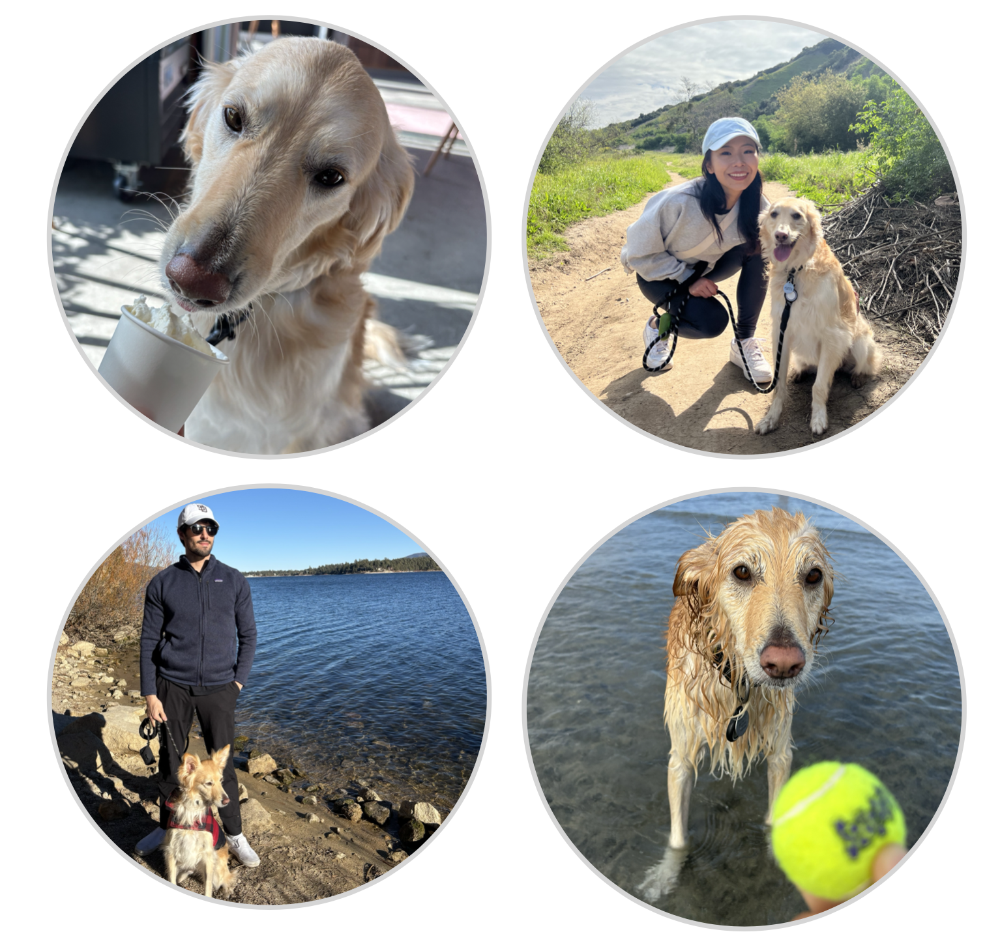

YAO YU
yayu@ucsd.edu
Schmidt AI in Science Postdoc, UCSD
Scripps Insitution of Oceanography
Life
I live in San Diego with my husband Fernando and our dog Hanna. We enjoy long walks, trying icecream and coffee.

Life-Work
Some recommendations:
Math book: A Guided Tour of Mathematical Methods for the Physical Sciences by Roel Snieder
I absolutely love this book. I learned all my math in Chinese, so my mind is wired to approach it in a certain way. This book offered intuitive insights and taught me how to express mathematical concepts and formulas in English.
Videos:
Wave across the Pacific is a documentary showcases Walter Munk's research on waves generated by Antarctic storms. It is a must watch for every Scripps people. Hope you enjoy it!